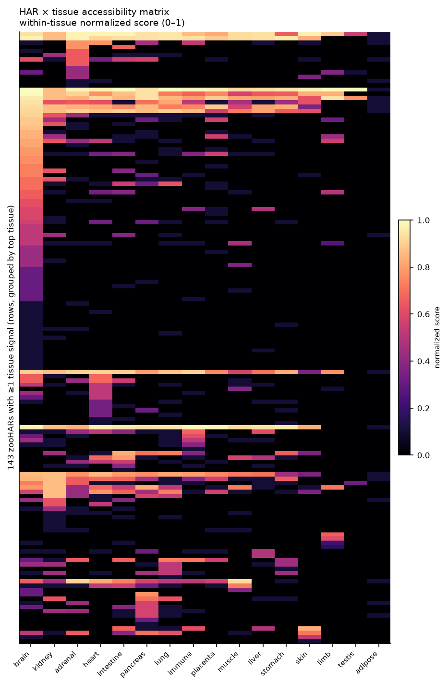
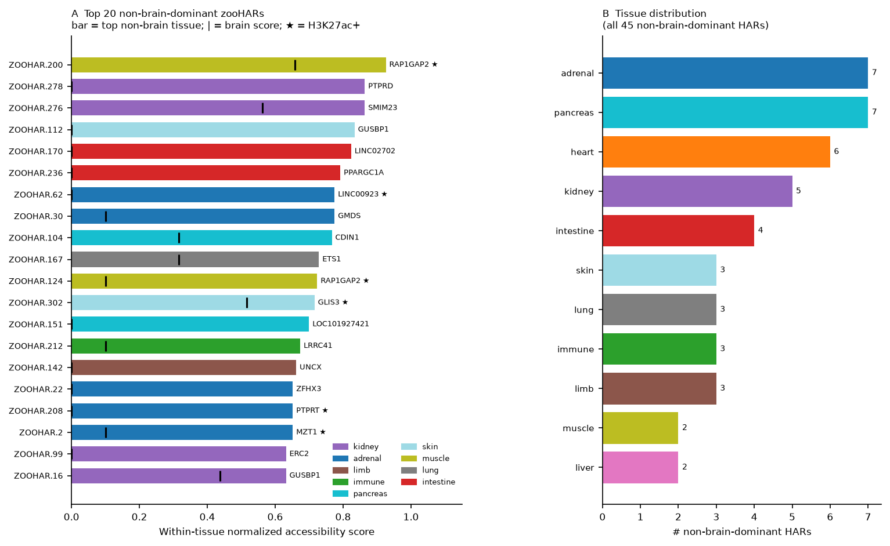
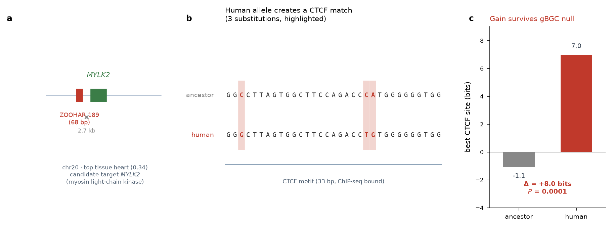
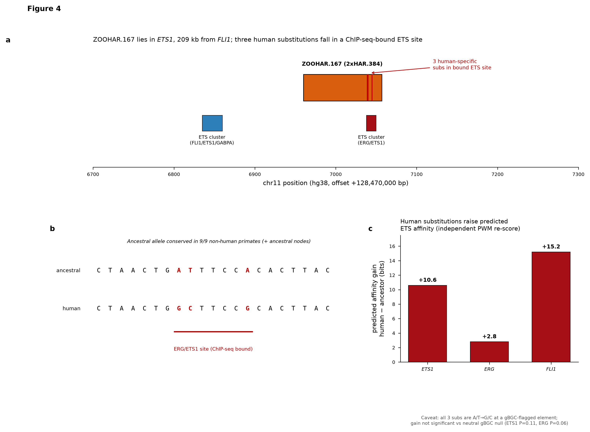

Claude Science — computational analysis manuscript
Human accelerated regions (HARs) are conserved sequences that acquired an unusual density of human-lineage substitutions, and are now largely interpreted as developmental enhancers, studied predominantly in neurodevelopmental contexts. We ask two questions that this focus has left open: across which tissues are HARs accessible, and do any carry a human-specific substitution that changes transcription-factor binding at an experimentally bound site. Building a 312 × 16 single-cell chromatin-accessibility matrix for the Zoonomia HARs (zooHARs; Keough et al. 2023) from CATlas snATAC and ENCODE DNase, with an ENCODE H3K27ac active-enhancer overlay and VISTA in-vivo enhancers for orthogonal validation, we find that brain is the tissue in which the most HARs are maximally accessible (66 of the 143 with signal) but 45 zooHARs are dominantly accessible outside the brain, spanning kidney, intestine, adrenal, muscle, skin, pancreas, lung, heart, immune and liver lineages; a landmark-HAR control shows that accessibility localises candidate tissues but does not by itself demonstrate enhancer function. We then screened all 45 non-brain-dominant HARs for human-specific substitutions inside UniBind ChIP-seq-bound transcription-factor motifs, re-scoring each against the reconstructed primate ancestor and testing every affinity change against a per-locus GC-biased gene conversion (gBGC) null. 36 of the 45 overlap a bound motif, 19 carry a substitution inside one, and 8 show an affinity gain that exceeds the gBGC null (P < 0.05). The strongest, ZOOHAR.189, converts a non-matching sequence into a bound CTCF site near MYLK2 (Δ +8.0 bits, P = 0.0001); others gain bound TP63, GATA3 and PRDM1 sites in tissue-matched contexts. These gains are predicted from position-weight matrices and remain hypotheses pending allele-specific assays: the GC-rich, gBGC-flagged locus ZOOHAR.167 produces exactly the affinity gain neutral gene conversion predicts and is not significant, illustrating why the null is applied throughout. Together these results characterise HARs as a multi-tissue set of candidate cis-regulatory elements, a subset of which carry candidate human-specific transcription-factor binding changes worth functional test.
Human accelerated regions (HARs) are genomic sequences held nearly invariant across mammals that acquired an unusually high density of substitutions on the human lineage. The founding observation was that the fastest-evolving human non-coding sequences are overwhelmingly conserved elements, the top-ranked of which, HAR1, is an RNA gene expressed in the developing neocortex (Pollard et al. 2006; Prabhakar et al. 2006). That first example — a brain-expressed transcribed RNA — shaped the early interpretation of HARs as neurodevelopmental and, where a HAR falls inside a transcribed non-coding gene, as potentially acting through the transcript.
Subsequent work has established a different model. Over the past decade, and accelerating with massively parallel reporter assays, machine-learning dissection of primate neurodevelopmental chromatin, and three-dimensional genome mapping, the prevailing view is that most HARs are developmental cis-regulatory enhancers whose human-specific substitutions tune enhancer strength, predominantly in neurodevelopmental contexts (Capra et al. 2013; Girskis et al. 2021; Whalen et al. 2023; Keough et al. 2023). Demonstrated enhancer activity also extends beyond the nervous system, as in the human-specific HACNS1 limb enhancer (Prabhakar et al. 2008). The transcribed-RNA reading of HAR1 is now understood as characteristic of that specific locus rather than the general mechanism.
Two questions follow from this enhancer model that its neurodevelopmental focus has left largely unexamined. First, across which tissues are HARs active? HAR enhancer activity has been mapped most intensively in fetal brain and neural progenitors, and the aggregate neurodevelopmental enrichment is well established, but whether individual HARs are dominantly active in non-neural tissues has not been surveyed across a broad organ panel. Second, and more mechanistically, do the human-specific substitutions change transcription-factor binding at sites that are actually occupied? The enhancer model holds that HAR substitutions tune enhancer strength, and machine-learning and reporter studies support this in aggregate, but a direct, locus-resolved test — asking whether a human-specific change falls inside an experimentally bound TF motif and alters its predicted affinity, while controlling for the GC-biased gene conversion (gBGC) that confounds substitution counts at these GC-rich elements — has not been applied systematically outside the brain.
Here we address both for the 312 Zoonomia HARs (zooHARs) of Keough et al. 2023, using orthogonal public-data layers rather than a single assay. We map each zooHAR's chromatin accessibility across 16 tissues and identify the 45 dominantly active outside the brain (§3.1–3.3), bounding the interpretation with a landmark-HAR control that shows accessibility localises candidate tissues without demonstrating enhancer function. We then screen all 45 non-brain-dominant HARs for human-specific substitutions inside UniBind ChIP-seq-bound TF motifs, re-scoring predicted affinity against the reconstructed primate ancestor and testing each change against a per-locus gBGC null, and characterise the loci that pass (§3.4). A separate analysis of the subset of zooHARs that fall inside long non-coding RNA genes — asking whether they act through the DNA element or the host transcript — is provided in the accompanying supplement. Together these analyses place HARs as a multi-tissue set of candidate cis-regulatory elements and identify specific loci at which human substitutions may have altered transcription-factor binding.
All analyses use hg38. The primary catalogue is the 312 zooHARs of Keough et al. 2023 (Science, abm1696, Table S1). The working coordinate table (har_set_hg38.csv) contains 319 rows — the 312 zooHARs plus 7 supplementary Girskis et al. 2021 MPRA elements — and the 7 supplementary rows are excluded when reproducing zooHAR-only counts. Legacy identifiers (e.g. 2xHAR.384) are carried alongside the ZOOHAR.n names.
A 312 HAR × 16 tissue normalized accessibility matrix was built from two hg38 sources, contributing 14 and 2 tissues respectively:
- CATlas single-cell ATAC atlas (Zhang et al. 2021), for 14 tissues: each HAR was intersected (bedtools intersect) with each cell type's candidate cis-regulatory element (cCRE) BED, and the per-tissue score was the fraction of that tissue's cell types in which the HAR overlapped a cCRE (accessibility breadth).
- ENCODE DNase-seq for the 2 tissues absent from CATlas — limb (ENCSR818JGZ, 53–56 d embryo) and testis (ENCSR866ODX): the per-tissue score was the maximum DNase signal within the HAR, set to zero outside a called peak.
To make scores comparable across assays and sequencing depths, values were quantile-normalized to the interval [0,1] separately within each tissue, with zeros held at 0 and non-zero values rescaled to [0.1,1] (zero-anchored normalization). Two further layers were added for annotation and validation but not incorporated into the score: an ENCODE H3K27ac active-enhancer flag (available for 13 of the 16 tissues) and VISTA Enhancer Browser in-vivo positive enhancers, the latter used only for orthogonal validation. A HAR was defined as non-brain-dominant when its highest-scoring tissue was non-brain, that score was positive, and it exceeded the brain score by more than 0.15.
An accessibility score reports overlap with open or regulatory chromatin in a tissue's cells, which is necessary but not sufficient for enhancer function. The landmark validation in §3.1 confirms this limit; accordingly, tissue calls are reported as candidate hypotheses rather than demonstrated enhancer function.
Human-specific substitutions were tested for effects on transcription-factor binding as follows. Substitution positions and alleles were taken from the primary per-locus tables where available, and otherwise recovered from the Ensembl EPO primate alignment (human versus the reconstructed human–chimpanzee–bonobo ancestor, requiring the ancestral allele to be conserved across the six outgroup primates); all human alleles were verified against the hg38 reference. Substitutions were intersected with UniBind ChIP-seq-derived bound TF-binding sites (hg38 Robust collection, 97.5 million sites), and for each substitution inside a bound motif the human and reconstructed-ancestor alleles were scored against the JASPAR position-weight matrix of the bound factor (log-odds versus uniform background, both strands, best-window score). To test whether an affinity gain was distinguishable from GC-biased gene conversion — the principal neutral confounder at GC-rich HARs — a per-locus neutrality null was generated by 20,000 simulations placing the same substitutions (preserving their allele composition) at random positions in the element, and the observed gain was compared against this distribution. This procedure was applied to ZOOHAR.167 and, as a systematic screen, to all 45 non-brain-dominant HARs (§3.4).
The 16 tissues we examined comprise the 14 profiled by the CATlas single-cell ATAC atlas (Zhang et al. 2021) — brain, heart, immune, intestine, kidney, liver, lung, muscle, pancreas, placenta, skin, stomach, adrenal and adipose — together with limb and testis, added from ENCODE DNase-seq because they are absent from CATlas (Methods §2.2). Of the 312 zooHARs, 143 have detectable accessibility in at least one of these tissues. Among these 143, brain is the highest-scoring tissue for the largest number of HARs (66/143 = 46%). This brain-enrichment is the expected result given the well-documented neurodevelopmental bias of HARs, and its recovery from an independent chromatin-accessibility dataset — one not used to define the HAR set — indicates that the matrix reproduces the known aggregate signal and is therefore a sound basis for the non-brain analysis that follows. On that basis, 45 zooHARs are non-brain-dominant — their top tissue is non-brain and exceeds brain by margin > 0.15 — and 9 of these carry an ENCODE H3K27ac active-enhancer mark in that top tissue. The non-brain signal spans kidney, adrenal, lung, heart, intestine, pancreas, immune, muscle and skin lineages (Figure 1).
A control against five named landmark HARs establishes the interpretive limit of the accessibility calls. Only two (HAR2/HACNS1 and 2xHAR.20) are in the zooHAR catalogue, and both score highest in brain or kidney rather than in their known transgenic-enhancer tissues (for example, HAR2's in-vivo limb activity, VISTA hs521, is not detected), because bulk and pseudobulk accessibility does not capture the developmental enhancer activity of these ~120 bp elements. The matrix thus reproduces the aggregate brain-enrichment of HARs but does not, by itself, identify the functional tissue of an individual element; the tissue calls in the following sections are accordingly treated as candidate hypotheses, not demonstrated enhancer function.

Figure 1. Chromatin-accessibility landscape of the 312 zooHARs across 16 tissues. Heatmap of the normalized accessibility matrix, restricted to the 143 zooHARs with a non-zero score in at least one tissue (rows) across the 16 tissues (columns; 14 from the CATlas single-cell ATAC atlas, plus limb and testis from ENCODE DNase-seq). Colour encodes the within-tissue, zero-anchored normalized accessibility score (0–1), where the per-tissue value is the fraction of that tissue's cell types in which the HAR overlaps a candidate cis-regulatory element (CATlas) or the peak-gated maximum DNase signal (ENCODE limb and testis). Brain is the highest-scoring tissue for the largest number of HARs (66/143, 46%), consistent with the established neurodevelopmental enrichment of HARs, while a substantial subset shows its strongest accessibility outside the brain.
We ranked the 45 non-brain-dominant HARs by accessibility score and examined the top ten (Table 1; Figure 2); they span muscle, kidney, skin, intestine, adrenal, pancreas and lung. This selection uses accessibility magnitude rather than active-enhancer marks as the primary criterion, which prioritises breadth of open chromatin over confirmed enhancer activity: only 2 of these 10 (ZOOHAR.200, ZOOHAR.62) carry an H3K27ac mark in their single top-scoring tissue, and the full set of 9 non-brain-dominant HARs with a top-tissue H3K27ac mark is a partly different group (§3.3, Table 2). The absence of a top-tissue mark for the other 8 does not exclude them as candidate enhancers, for two reasons. First, the mark is not generally absent: 8 of these 10 HARs carry an H3K27ac mark in at least one non-brain tissue — it simply does not fall in the highest-accessibility tissue. Second, the H3K27ac panel is incomplete: across all 45 non-brain-dominant HARs a top-tissue H3K27ac positive occurs only in adrenal, heart, immune, muscle and skin, so HARs topping kidney, intestine, lung or pancreas (6 of these 10) cannot register a top-tissue mark irrespective of their biology. The two criteria are therefore complementary rather than a filter: accessibility (CATlas single-cell ATAC) identifies candidate regulatory intervals, and the H3K27ac overlay (ENCODE bulk ChIP) upgrades the subset with independent active-enhancer evidence in the matched tissue; a HAR without the mark remains an accessibility-level candidate, not a rejected one.
For each HAR we identified a candidate target gene by taking the nearest developmental regulator or otherwise biologically coherent protein-coding gene within ±1 Mb (Ensembl gene models; Table 1). For six of the ten (ZOOHAR.276, .112, .170, .62, .30, .104) the nearest annotated gene is an uncharacterized gene, pseudogene or non-coding locus while the candidate regulator lies further along the same locus, so the target assignment is a hypothesis rather than a call and enhancer-to-promoter contact mapping (4C/Hi-C) would be required to resolve it. Two patterns recur across the wider set: PPARGC1A is the nearest gene to two independent zooHARs (ZOOHAR.56 and ZOOHAR.236), and the ETS1/FLI1 locus is bound by an endothelial TF program (§3.4).
Four of the ten candidates are developmental transcription factors or morphogens (FGF18, FOXC1, MEIS2, and the ETS1/FLI1 pair); a further two are developmental signalling molecules that are not themselves DNA-binding factors (PTPRD, a receptor phosphatase; MAP3K1, a MAPK-cascade kinase). The remaining four are metabolic or otherwise non-developmental (PPARGC1A, a metabolic coactivator; APOA5, lipid metabolism; RAP1GAP2, a Rap1-GTPase regulator; and the distal IGF1R, whose 935 kb separation makes the assignment weak).
Table 1. Top 10 non-brain-dominant zooHARs, with candidate target genes. Accessibility scores are from the normalized matrix (Score = top non-brain tissue; Brain = same HAR's brain score). "Nearest gene" is the closest annotated gene (with distance); "Candidate target" is the nearest developmental regulator or otherwise coherent protein-coding gene within ±1 Mb (Ensembl gene models), which for several HARs is more distal than the nearest annotated gene. Role: TF = transcription factor, morphogen, signalling (non-DNA-binding developmental molecule), or metabolic/other. "in gene" = HAR lies within that gene.
| # | zooHAR | Tissue | Score | Brain | H3K27ac | Nearest gene (dist) | Candidate target (dist) | Role |
|---|---|---|---|---|---|---|---|---|
| 1 | ZOOHAR.200 | muscle | 0.93 | 0.66 | yes | RAP1GAP2 (in gene) | RAP1GAP2 (in gene) | other |
| 2 | ZOOHAR.278 | kidney | 0.86 | 0.00 | – | PTPRD (in gene) | PTPRD (in gene) | signalling |
| 3 | ZOOHAR.276 | kidney | 0.86 | 0.56 | – | SMIM23 (118 kb) | FGF18 (210 kb) | morphogen |
| 4 | ZOOHAR.112 | skin | 0.83 | 0.00 | – | GUSBP1 (in gene) | MAP3K1 (138 kb) | signalling |
| 5 | ZOOHAR.170 | intestine | 0.82 | 0.00 | – | LINC02702 (35 kb) | APOA5/APOA cluster (95 kb) | metabolic |
| 6 | ZOOHAR.236 | intestine | 0.79 | 0.00 | – | PPARGC1A (in gene) | PPARGC1A (in gene) | metabolic |
| 7 | ZOOHAR.62 | adrenal | 0.78 | 0.00 | yes | LINC00923 (30 kb) | IGF1R (935 kb) | other (distal) |
| 8 | ZOOHAR.30 | adrenal | 0.78 | 0.10 | – | GMDS (in gene) | FOXC1 (497 kb) | TF |
| 9 | ZOOHAR.104 | pancreas | 0.77 | 0.32 | – | CDIN1 (in gene) | MEIS2 (215 kb) | TF |
| 10 | ZOOHAR.167 | lung | 0.73 | 0.32 | – | ETS1 (in gene) | ETS1 / FLI1 (in gene / 209 kb) | TF |

Figure 2. Non-brain-dominant zooHARs. (a) The top 20 non-brain-dominant HARs ranked by normalized accessibility score. Bar length is the HAR's score in its top non-brain tissue, and the bar is coloured by that tissue (legend). The short vertical tick on each bar marks the same HAR's brain score for comparison; the tick sits at zero (and is therefore not visible) for HARs with no brain accessibility. A star (★) marks HARs carrying an ENCODE H3K27ac active-enhancer mark in their top tissue. The label at the right of each bar is the nearest annotated gene — a mix of protein-coding genes and non-coding/uncharacterized loci, shown as locus context and not implying that the HAR acts through that gene. (b) Tissue distribution of all 45 non-brain-dominant HARs (top tissue non-brain, exceeding the brain score by margin > 0.15). A HAR is defined as non-brain-dominant on accessibility alone; active-enhancer-mark support is treated separately (Table 2, §3.3).
Of the 45 non-brain-dominant HARs, 9 overlap an ENCODE H3K27ac peak in the same tissue in which they are most accessible (Table 2). This co-occurrence of open chromatin and an active-enhancer histone mark in the enriched tissue is the strongest tissue-level evidence available in this dataset that these elements act as enhancers there, though it remains correlative: H3K27ac marks active regulatory chromatin but does not establish that the element drives a specific target gene, and none of the 9 overlaps a VISTA in-vivo positive enhancer, so none has independent transgenic confirmation. The 9 fall into interpretable groups. Two are the adjacent RAP1GAP2 elements ZOOHAR.200 and ZOOHAR.124 (chr17, muscle), which overlap the gene body and may form a single muscle-active regulatory region. Three sit in transcription-factor or signalling genes with plausible tissue matches — ZOOHAR.302 in GLIS3 (skin; GLIS3 functions in epithelial and endocrine development), ZOOHAR.64 in AXIN2 (immune; Wnt-pathway regulator), and ZOOHAR.208 in PTPRT (adrenal). Two are heart-accessible and near muscle/contractility genes (ZOOHAR.133 near MIR4454; ZOOHAR.189 2.7 kb from MYLK2, a cardiac/skeletal myosin light-chain kinase). ZOOHAR.62 (adrenal) lies 30 kb from the lncRNA LINC00923, and ZOOHAR.2 (adrenal) 167 kb from MZT1. As with the accessibility ranking, the distant assignments (LINC00923, MZT1) are candidate targets pending contact mapping. These 9 are the subset for which a tissue-matched reporter or CRISPRi assay is best motivated, because both the accessibility and the active-mark evidence point to the same tissue.
Unlike the accessibility ranking in Table 1, this set needs no separate candidate-target column: 7 of the 9 HARs lie within, or within 2.7 kb of, their nearest gene, so the nearest gene is itself the candidate, and the two distal cases (LINC00923 at 30 kb, MZT1 at 167 kb) have no closer developmental regulator to nominate.
Table 2. The 9 non-brain-dominant zooHARs with an H3K27ac active-enhancer mark in their top tissue (ranked by accessibility score; none overlaps a VISTA in-vivo positive enhancer).
| zooHAR | Top tissue | Score | Brain | Nearest gene (dist) |
|---|---|---|---|---|
| ZOOHAR.200 | muscle | 0.93 | 0.66 | RAP1GAP2 (in gene) |
| ZOOHAR.62 | adrenal | 0.78 | 0.00 | LINC00923 (30 kb) |
| ZOOHAR.124 | muscle | 0.72 | 0.10 | RAP1GAP2 (in gene) |
| ZOOHAR.302 | skin | 0.72 | 0.52 | GLIS3 (in gene) |
| ZOOHAR.208 | adrenal | 0.65 | 0.00 | PTPRT (in gene) |
| ZOOHAR.2 | adrenal | 0.65 | 0.10 | MZT1 (167 kb) |
| ZOOHAR.64 | immune | 0.61 | 0.32 | AXIN2 (in gene) |
| ZOOHAR.133 | heart | 0.52 | 0.32 | MIR4454 (in gene) |
| ZOOHAR.189 | heart | 0.34 | 0.00 | MYLK2 (2.7 kb) |
A separate analysis of the 110 zooHARs that fall inside a GENCODE v50 lncRNA gene — classifying whether each acts through the DNA element or the host transcript, and mapping the human-specific substitutions relative to exon/intron structure — is provided in the accompanying supplement (HAR_LncRNA_supplementary.md, §S1–S3).
To ask which non-brain HARs carry a human substitution that could alter transcription-factor binding, we screened all 45 non-brain-dominant HARs uniformly. Human-specific substitutions were recovered for 44 (one, ZOOHAR.88, lacks an EPO primate-alignment block) from the Ensembl EPO alignment — human versus the reconstructed human–chimpanzee–bonobo ancestor, requiring the ancestral allele to be conserved across the six outgroup primates — and intersected with UniBind ChIP-seq-derived bound TF-binding sites (hg38 Robust collection, 97.5 million sites). This uses an experimentally bound motif, not a predicted match. For each HAR carrying such a substitution we re-scored the human versus ancestral allele with the JASPAR PWM of the bound factor and tested the affinity change against a per-locus GC-biased gene conversion (gBGC) null (20,000 simulations placing the same substitutions at random positions in the element). All human alleles were verified against the hg38 reference before scoring.
36 of the 45 HARs overlap ≥1 bound TFBS, and 19 carry a human-specific substitution inside a bound motif. Of these 19, 8 show an affinity change that exceeds the gBGC null at P < 0.05 (Table 3) — an enrichment over the ~1 expected by chance among 19 tests. The bound factors are varied (CTCF, GATA3, TP63, FOSL2, TEAD1, PRDM1, MAFK, ZNF263), and the substitution spectra of the significant HARs are mixed rather than pure weak→strong, so the gains are not driven by gBGC.
Table 3. Non-brain-dominant HARs with a human-specific substitution in a UniBind-bound TF motif whose affinity change survives the gBGC null (P < 0.05).
| HAR | Top tissue | Bound TF | Δ affinity (bits) | Null P | Spectrum | Nearest gene | Candidate target |
|---|---|---|---|---|---|---|---|
| ZOOHAR.189 | heart 0.34 | CTCF | +8.0 | 0.0001 | W→S1 S→W1 S→S1 | MYLK2 | MYLK2 (2.7 kb) |
| ZOOHAR.52 | adrenal 0.43 | GATA3 | +6.2 | 0.0010 | W→S3 S→W2 | LINC00968 | PENK (117 kb) |
| ZOOHAR.13 | liver 0.49 | MAFK | +3.7 | 0.0031 | W→S2 S→S1 W→W1 | BNC2 | BNC2 (in gene) |
| ZOOHAR.22 | adrenal 0.65 | PRDM1 | +6.0 | 0.0070 | W→S2 S→W1 S→S1 | ZFHX3 | ZFHX3 (in gene) |
| ZOOHAR.151 | pancreas 0.70 | FOSL2 | +14.3 | 0.0078 | W→S4 S→S1 | LOC101927421 | ZNF608 (301 kb) |
| ZOOHAR.302 | skin 0.72 | TP63 | +13.6 | 0.0179 | W→S1 S→W2 | GLIS3 | GLIS3 (in gene) |
| ZOOHAR.278 | kidney 0.86 | ZNF263 | +0.7 | 0.0231 | S→W2 S→S1 | PTPRD | PTPRD (in gene) |
| ZOOHAR.170 | intestine 0.82 | TEAD1 | +3.9 | 0.0288 | W→S1 S→W2 | LINC02702 | BUD13 (54 kb) |
Three of the significant hits are described in detail below; the remainder are listed in Table 3, and the full 19-HAR re-scoring is provided as a supplementary table.
ZOOHAR.189 — a human-specific CTCF site (chr20, heart; Figure 3). The strongest hit (2.7 kb from the smooth/cardiac-muscle kinase MYLK2) converts a non-matching sequence into a bound CTCF site (ancestral −1.1 → human +7.0 bits, P = 0.0001) through three substitutions of mixed spectrum (one W→S, one S→W, one S→S — not a gBGC signature). A human-specific CTCF-site gain is mechanistically distinct from the enhancer-affinity changes elsewhere in the table: it implicates insulator/architectural rather than enhancer function, and is the clearest candidate in the set for an allele-specific assay. No prior report describes this element or a human-specific CTCF gain at the locus.
ZOOHAR.302 — a bound TP63 gain in skin (chr9, in GLIS3). This HAR is most accessible in skin (0.72) and is one of two significant hits (with ZOOHAR.189) that also carry an ENCODE H3K27ac active-enhancer mark in the same top tissue (§3.3); it is the only one of the two whose bound-motif gain is at an enhancer transcription factor rather than the insulator CTCF. Its substitutions strengthen a bound TP63 motif (−9.7 → +3.9 bits, +13.6; P = 0.018) — TP63 is a transcription factor required for epidermal development — and the HAR lies inside GLIS3, an epithelial and endocrine developmental regulator. Accessibility, the active-enhancer mark, the bound-factor identity and the host gene all point to the same skin/epithelial context, making this the locus for which the lines of evidence are most consistent.
ZOOHAR.52 — a bound GATA3 gain in adrenal (chr8; candidate target PENK). Of its five human-specific substitutions (mixed spectrum), two fall within a bound GATA3 motif and raise its predicted affinity (+6.2 bits, P = 0.001), at a HAR most accessible in adrenal (0.43); the nearest candidate target is the proenkephalin gene PENK (117 kb), and GATA3 has established roles in adrenal/neuroendocrine and immune development. It carries no top-tissue H3K27ac mark, so the evidence is accessibility + bound-motif gain rather than a confirmed active enhancer.
ZOOHAR.22 — a bound PRDM1 gain in adrenal (chr16, in ZFHX3). All four of this HAR's human-specific substitutions (mixed spectrum) fall inside a bound PRDM1 (BLIMP1) motif — the largest number of in-motif substitutions of any significant hit — and its predicted affinity rises +6.0 bits (P = 0.007), at a HAR most accessible in adrenal (0.65). It lies inside ZFHX3, a zinc-finger homeobox transcription factor, and PRDM1 is itself a developmental and immune regulator, so the bound factor and host gene are function-coherent. Like ZOOHAR.52 it carries no top-tissue H3K27ac mark, so the evidence is accessibility + bound-motif gain.
The largest single affinity gain in the screen belongs to ZOOHAR.151 (bound FOSL2, an AP-1 factor; +14.3 bits, P = 0.008; pancreas 0.70, 301 kb from ZNF608), but four of its five substitutions are weak→strong and it carries no active-enhancer mark, so despite the magnitude it ranks below the CTCF, TP63, GATA3 and PRDM1 loci for follow-up: its spectrum is the most consistent with neutral GC-biased gene conversion among the significant hits, even though the per-locus null (which preserves that spectrum) still excludes chance at P < 0.05. Conversely, ZOOHAR.278 (ZNF263, kidney) clears the null (P = 0.023) on an affinity change of only +0.7 bits, a reminder that statistical significance in this screen does not by itself imply a large effect: magnitude and significance are reported separately in Table 3, and the loci prioritised above combine both.
ZOOHAR.167 is recovered by the same screen but is non-significant. ZOOHAR.167 is one of the 45 non-brain-dominant HARs (lung; ranked 10th on accessibility, Table 1) and one of the 19 carrying a substitution inside a bound motif, but unlike the eight significant hits it does not clear the gBGC null (Figure 4). It lies inside the protein-coding gene ETS1. Its 3 of 4 human substitutions inside a bound ERG/ETS1 site raise predicted ETS affinity (ETS1 +10.6, ERG +2.8, FLI1 +15.2 bits), but all three are weak→strong, the element is high-confidence gBGC, and the null is not significant (P = 0.106 ETS1, 0.058 ERG). It illustrates why the null is applied throughout: an affinity gain at a GC-rich bound motif is expected under neutral gBGC, and only the mixed-spectrum hits in Table 3 exceed that expectation. (The three lncRNA-overlapping HARs flagged before the screen — ZOOHAR.24, ZOOHAR.42, ZOOHAR.216 — are re-scored by the same method in the supplement, §S1; none is a significant bound-motif gain.)
These per-locus gains are hypotheses at the level of predicted affinity; as with ZOOHAR.167, none can be attributed to selection without an allele-specific functional assay, and the screen serves to identify which loci — led by ZOOHAR.189/CTCF, ZOOHAR.302/TP63, ZOOHAR.52/GATA3 and ZOOHAR.22/PRDM1 — are worth that assay and in which tissue.

Figure 3. The strongest screen hit, ZOOHAR.189, gains a bound CTCF site. (a) Locus schematic: the HAR (chr20, 68 bp) lies 2.7 kb from MYLK2 and is most accessible in heart. (b) The 33 bp window that scores highest for CTCF in the human allele, aligned ancestor over human; all three human-specific substitutions (highlighted; mixed spectrum, one W→S, one S→W, one S→S — not gBGC-like) fall inside it and convert a non-matching ancestral sequence into a CTCF match. (c) The best-scoring CTCF site anywhere in the element, for each allele: the reconstructed ancestor has no strong site (best −1.1 bits) while the human allele scores +7.0, a gain of Δ = +8.0 bits; a per-locus neutrality null (20,000 simulations) gives P = 0.0001, the most significant of the 19 bound-motif HARs. Human alleles were verified against hg38 before scoring.

Figure 4. ZOOHAR.167 at the ETS1/FLI1 locus, recovered by the screen but non-significant. (a) Locus schematic: the HAR (chr11q24.3, 97 bp) sits inside ETS1, 209 kb from FLI1. (b) Three human-specific substitutions (all A/T→G/C) fall within a ChIP-seq-bound ERG/ETS1 motif; the ancestral allele is conserved in 9/9 non-human primates. (c) Independent PWM re-score of human vs reconstructed-ancestor affinity: ETS1 +10.6, ERG +2.8, FLI1 +15.2 bits. Because a per-locus neutrality null gives P = 0.106 (ETS1) and P = 0.058 (ERG), the gain is not distinguishable from GC-biased gene conversion without an allele-specific functional assay.
These results extend the HAR enhancer model along two axes the field's neurodevelopmental focus has left underexamined — tissue breadth and locus-resolved transcription-factor binding — and are explicit about where public data stop.
On tissue, HARs are not brain-restricted: brain accounts for the largest single group, but 45 zooHARs are dominantly accessible outside it, across kidney, adrenal, heart, intestine, pancreas, muscle, skin, lung, immune and liver lineages, and 9 of these carry an active-enhancer histone mark in their enriched tissue. The lncRNA-overlapping subset shows the same pattern at the level of expression — 48 of 56 fetal-detected host genes reach their maximum outside the brain (supplement §S2). Non-brain HAR activity is therefore a systematic feature of the catalogue rather than a handful of exceptions.
On mechanism, the screen provides a locus-resolved, gBGC-controlled test of the enhancer model's central claim that human substitutions alter regulatory binding. Of the 45 non-brain HARs, 19 place a human-specific substitution inside an experimentally bound TF motif, and 8 show an affinity gain that exceeds the neutral gBGC expectation — roughly eight-fold more than chance among the 19 tested. The bound factors are varied and tissue-appropriate: a gained CTCF site at ZOOHAR.189 (mechanistically an insulator/architectural change rather than an enhancer one), and gained TP63, GATA3 and PRDM1 sites in skin, adrenal and adrenal contexts that match each element's accessibility. That the significant hits carry mixed substitution spectra, while the pure weak→strong ZOOHAR.167 does not clear the null, indicates the screen is separating candidate binding changes from GC-biased gene conversion rather than simply rediscovering GC-rich elements.
Three limits bound these results. First, accessibility is not function: the landmark control shows chromatin accessibility does not recover known transgenic-enhancer tissue calls, so every tissue assignment is a candidate hypothesis. Second, the binding gains are predicted, not measured: they are position-weight-matrix scores at bound motifs, so they identify where a human substitution is likely to have changed affinity, not that binding or a downstream regulatory effect actually changed — and the screen tests only the subset of substitutions that fall in a currently catalogued bound site, so it is a lower bound. Third, no locus here has a human-versus-ancestral functional assay, so no human-specific functional effect is demonstrated; ZOOHAR.167 makes the point concretely, as a GC-rich gBGC-flagged element that produces exactly the affinity gain neutral gene conversion predicts.
These results suggest a concrete follow-up programme. The eight significant loci — led by ZOOHAR.189/CTCF, ZOOHAR.302/TP63, ZOOHAR.52/GATA3 and ZOOHAR.22/PRDM1 — are the priority set for allele-specific reporter or CRISPRi assays in the matched tissue, paired with enhancer-to-promoter contact mapping to resolve their candidate targets; a gained CTCF site is additionally testable by allele-specific binding and local contact-domain assays. Within the lncRNA-overlapping subset (supplement §S1), the minority of loci carrying genuine functional-lncRNA signatures warrant transcript-level study, while the majority are more appropriately studied as cis-regulatory elements by the same assays.
All values were re-derived from the primary per-locus outputs. Key tables: zooHAR_lncRNA_evidence_tiers.csv (127-pair tier table with per-evidence-type columns), zooHAR_lncRNA_overlap_pairs.csv, nonbrain_ranked_HARs.csv (45 non-brain HARs), har_tissue_matrix.csv (312 × 16), har_set_hg38.csv (coordinates + gBGC flags), paper_readiness_scorecard.csv, ZOOHAR167_ETS_validation.csv, tierA_substitutions_exon_intron.csv, nonbrain_H3K27ac_active_HARs.csv (the 9 H3K27ac-active non-brain HARs of Table 2), HAR45_unibind_subs.csv (the 19 non-brain-dominant HARs with a human-specific substitution in a UniBind-bound TF motif) and HAR45_unibind_affinity_null.csv (affinity re-scoring and gBGC neutrality-null results for all 19, the significant subset of which is Table 3). UniBind bound TFBS are the hg38 Robust collection; substitutions were recovered from the Ensembl EPO primate alignment and human alleles verified against hg38.
Additional data resources: BrainSpan Atlas of the Developing Human Brain; ENCODE DNase-seq for limb (ENCSR818JGZ) and testis (ENCSR866ODX).